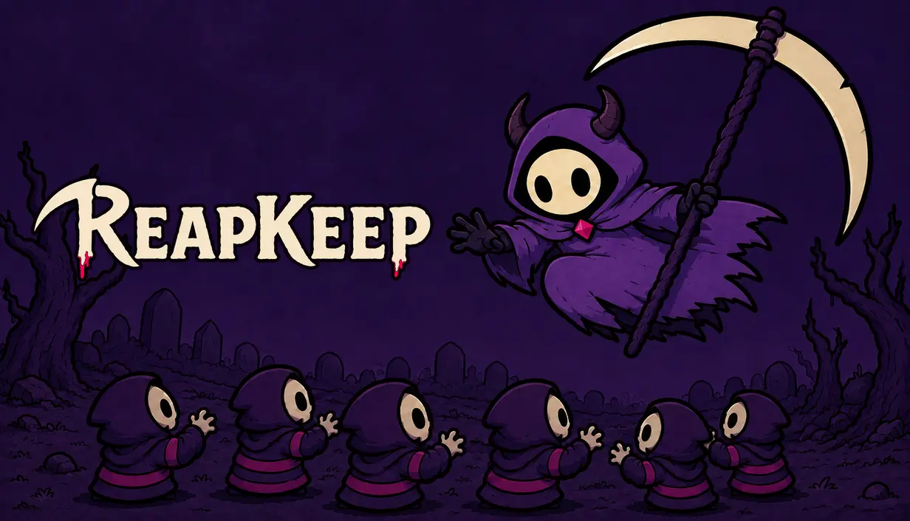
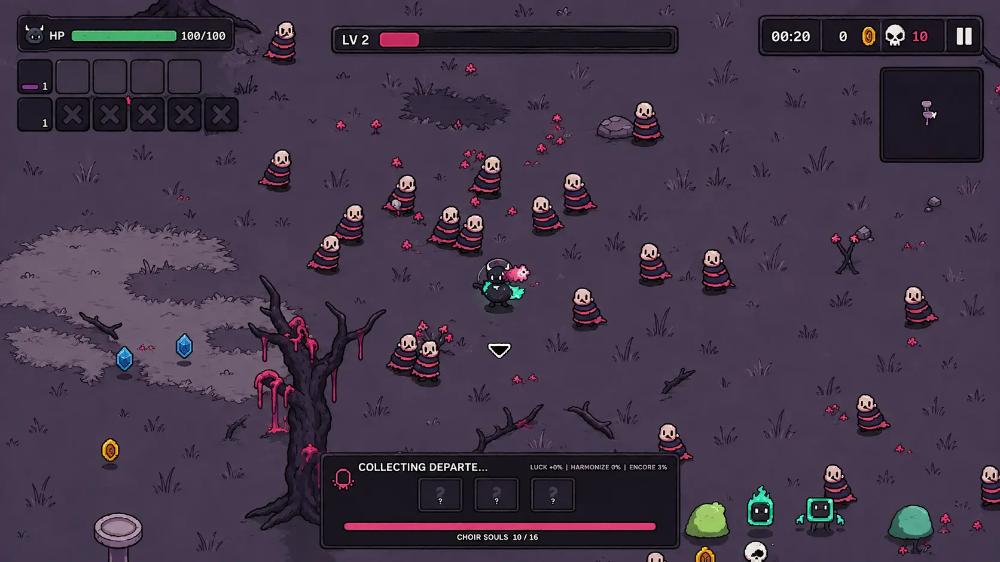
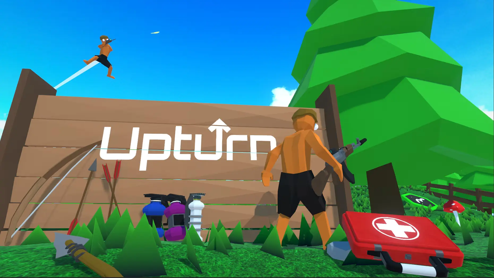
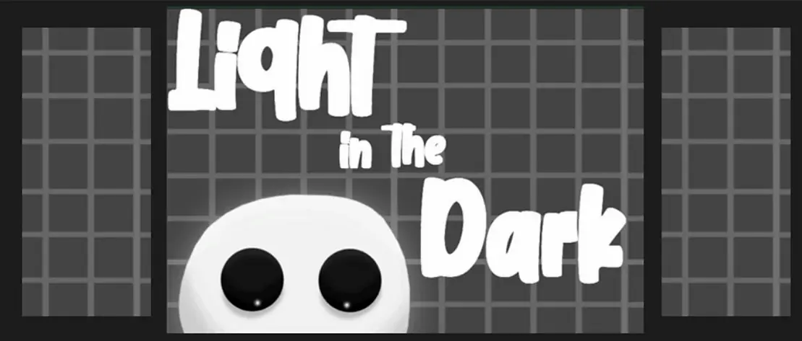

In developmentCurrent project
ReapKeep
A reaper-themed reverse bullet-hell roguelike being developed for Steam.
Gameplay Programmer · Software Engineer
I’m Garrett Goodwin, a computer science graduate and Unity developer focused on gameplay programming, tools, performance, and interactive applications.

In developmentCurrent project
A reaper-themed reverse bullet-hell roguelike being developed for Steam.
Selected work
Each project highlights a different part of my work: production-scale gameplay architecture, multiplayer development, AI, and rapid prototyping.

Independent game · 2025–Present
A 15-minute reverse bullet-hell roguelike built in Unity. I design and implement the game’s combat, characters, progression, content tools, UI, and validation systems.
Applied research · 2023–2024
Helped develop an interactive Unity application for replaying aircraft recording data across desktop and HoloLens builds at GTRI.

Multiplayer FPS · 2022–2023
A fast-paced 3D multiplayer shooter with multiple weapons and networked gameplay using Photon PUN.

2D wave shooter · 2021–2022
A top-down survival game featuring custom enemy AI and a weapon-upgrade system.
Experience
Designing and developing ReapKeep for Steam, including combat architecture, content pipelines, UI, progression, performance tooling, and production planning.
Implemented Unity features for interactive visualization of aircraft recording data, supported desktop and HoloLens builds, and worked with teammates to troubleshoot technical and performance challenges.
Graduated with a cumulative GPA of 3.78.
About
I’m interested in the point where design and engineering meet: creating a mechanic, making its state understandable, building tools to author its content, and verifying that it still works when the project becomes larger.
My experience spans gameplay programming, interactive visualization, multiplayer systems, performance optimization, and cross-platform Unity development.
C#, C++, Python, Java
Unity, Git, Agile/Scrum, testing and diagnostics
Blender, Photoshop, Trello, Audacity
Contact